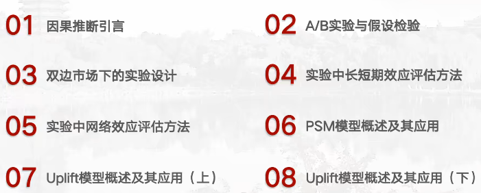
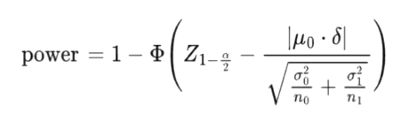

Lecturer：张婧婧 & 温中卉
Course Core Topics
- How to use experiment and causal inference toolkits to analyze the real business case and issues
- How to deal with the complicated scenarios which contains human interaction
- How to migrate the academic skill sets to the business world
Course Structure

Lecture 1: Understand what is Causality + A/B Test Beginning
https://meeting.tencent.com/crm/K05OA8Jed5什么是因果？
有名的框架有很多，大概最出名的有两个，一个是Judea Pearl在他的书《The book of WHY》中提到过“因果”的三个层次
- 相关（Association
- 干预（Intervention
- 反事实推断（Counterfactual
另一个是接下来在数据科学领域更广为接受的“潜在因果” (Potential Outcomes)框架。潜在因果框架的黄金标准(Golden Rules)就是随机控制实验(Randomized Control Trials, or Randomized Control Experiments)。
一个需要经常关注，且本质上很特殊的一种Case —— 辛普森悖论
辛普森悖论本质上讨论一个什么问题？
在做Experiment的时候，我们常常会在sample space里面遇到多个具备某种共同特征的individuals，它们组成的sub sample（或称groups）就会具备某种共同特征。这些共同特征在我们的因果推断中并非我们所关心的，于是便成为整个数据集中的confounders（扰动项）。为了更好的得到我们关心的那个independent variable的因果效应，我们便必须得关注某个confounder对因变量的影响（因为我们常常希望排除/控制它们，以便我们实现causal inference）。
但实际上在现实的商业世界中，confounders通过各种方式隐藏的很深，我们通常别说控制，甚至都难以发现它们。这其实从根本上导致为了做因果推断时分出来的两（或者多）个组没有办法实现“同质性”（homogeneity）。这种同质性陷阱的根源说到底就是因为潜藏的confounders在影响着因果效应，当然它从overall sample的角度肯定就无法甄别。不过“好处”在于，一旦我们人为细分sub sample讨论时，它就会显现出来，提供给我们抓住这一confounder的机会。此时便是经典的辛普森悖论的表现 —— 我们能看到分组数据下的因果效应和总体数据下呈现出的特征/趋势不一致。
说到这，反思这个问题：这种趋势/特征的差异是怎么造成的？核心就是你的随机化DGP没有做到位。在实操 中一般常见的原因有下列两个：
- 问题出在groups内部！
- 问题出在sampling环节！
在商业世界中，本质上我们做Causal Inference，就是希望通过做Experiment（或者是构造Experiment）的方式来得到因果关系。一般来说，广为接受的框架是Rubin和Imbens提出的“Potential Outcome Framework”。这个框架希望阐述的是：理想状况下，针对同一个Experiment，每一个个体（自然能扩展到每一个组）会“同时”产生treated outcome和controled outcome，然后我们针对这同一个个体或者是组别内来对它们两种情况下的outcome做difference，就能判断出来这其中的因果效应。这很显然，因为除了是否受到处理，这些个体都是indifference的，这样才算是做到了之前提到的黄金标准。
但事实上我们办不到，我们只有不同的组，一些组接受了treatment，一些组没有（control）。这时候我们从数学上会转向去考察他们的average outcome（或者说average difference），这个是能在现实中做到的，也能说明问题的。
这里我们通常会采用 “Mean（均值）”来作为这个average outcome的estimator。在数学上我们可以证明这种选择是最好的，因为我们能够证明这个estimator的expectation也就是实际上的因果效应，但这里不展开。当然，要使这个Mean能够说明因果问题，这一mean所对应的两个group必须得满足“随机性”这一要点。不满足，我们就没办法有信心认为我们的mean准确地捕捉到了这一treatment的因果效应（逻辑很直观，如果不随机，那极有可能就是某个不随机的因素导致的difference，而并非这个因果效应的因子）
在实际业务中，“随机性”是最难满足的/最易受到影响的，因为这两组人要么受别的我们看不到的因素的影响（可能是别的App造成了某一影响），要么它们分好组之后组内个体之间互相有影响。总之，随机性一直是业界和学界都在花大心思希望解决的问题。
从哲学深层来看，上述问题永远无法得到解决（除非你找到一个平行宇宙，除了你关心的那个因子之外其他都一模一样！PS：这里我想起本科学习的David Lewis的理论）。所以有个“退而求其次”的办法 —— 构造/寻找 “准实验”（quasi-experiment）。准实验也就是说接近实验那样的随机性，这种实验场景是可以人为构造/寻找出来的，然后使之在数学上满足潜在因果框架下的approximated estimation效果。这种思路衍生出很多因果识别的构造方法
- DID：双重差分法
- SCM：合成控制法
- RDD：断点回归法
上述方法看似能够解决一切问题，但不要忽略的一点是：这些方法所应对的数据都是experimental data！在现实中哪有那么好的机会给我们做实验来收相对干净的数据呢？多数时候都是observational data。而观测性数据里除了包含了大量的confounders之外——并且这些confounders还是我们无法控制它不产生的——它还常常存在核心的treatment本身跟Y之间不独立的情况。针对这一问题，Rubin提出说要不就考虑unconfoundedness好了：只要乱七八糟的confounders（或称covariates）明确要控制哪一个，在此基础上还能知道Y的取值跟treatment variable之间独立，那么我们就可以用CATE来做参数估计了（也就说，只要知道treatment variable和Y的联合分布就好了）。
常见的PSM和DML都是这种思路。
What is AB Test？
AB Test是在线随机试验的称呼，直观理解，就是在互联网时代，在网络空间/平台上使用实验的思想来识别因果效应。而一般互联网世界中关注的因果效应就是某项调整是不是真的能带来大的收益。这种思路在大数据时代有很大用武之地，因为样本量足够大，一切扰动因素在统计上会被稀释，因此分出来的实验组和对照组能非常非常接近ideal实验中的分组效果。在这一角度上来说，它比quasi-experiment要好，但也能体会到这背后传递出一种“大力出奇迹”的哲学，因此被传统的Economists所轻视，认为不能展现人类审美与智识的那丝超然性。
Anyway，A/B test起源于Bing中的一个小展示的设计，这一创意设计带来了1000 million的收益（非常惊人！）。在那之后AB Test就开始流行，Google是痴迷这一方法的代表。
i.e., 谷歌链接的“蓝色”是怎么选出来的？ 大约五年前，谷歌开始X进军Gmail广告领域。与他们的搜索引擎一样，广告以蓝色小链接的形式呈现，链接至各种网站。然而，据观察，当链接到广告时，这两种不同产品中使用的蓝色色调有所不同。传统上，在这种情况下，颜色的选择是由首席设计师或营销总监决定的。但在数据驱动的世界中，谷歌决定采用不同的方法。 他们进行了一系列（40个！）"1%"实验，让40个1%的用户接触特定色调的蓝色，每次测试都采用不同的色调。为了确保彻底性，以这种方式测试了40种不同的蓝色。目的是通过点击频率来辨别用户中最受欢迎的色调。结果发现，略带紫色的蓝色比略带绿色的色调更容易被点击。考虑到Google业务运营的规模，这一看似微不足道的调整产生了重大的财务影响:每年增加2亿美元的广告收入。
i.e., 淘宝采用首页个性推荐究竟有没有用？
从上面这些case中能看出什么呢？其实，能发现decision-makers在感性上往往很少做出有效的、有收益的产品优化决策；与此同时，而且对时序数据做单纯的数据分析在预测精度上是不足够的，因此做这种AB test还是非常有意义的。
AB Test还有一些别的优势：
AB Test背后的理论支撑就是“假设检验”。你得把“当前策略调整/业务调整没意义”当作原假设，然后来通过假设检验来做检验。一般用P值来判断对应。
一类错误在实际业务中是会存在膨胀的状况的，根因源自你过于频繁地查看实验的效果。假设你把做实验过程中每次repeek看到的结果都当作贝叶斯的先验条件去调整你的期望，那么搞到最后你的“一次都不犯错”的概率就指数“上升”了（但是小于1！），相应的你出错的概率就大大增加。怎么控制整个问题？很简单，减少repeek，减少你要repeek的指标数量，做对比控制(FDR)。
二类错误怎么控制呢？说白了就是提高你策略真的有用，同时还能被监控到的能力。这里你会依赖一个叫做统计效力（power，1-β，β是二类错误犯错的gai'l）的东西，power越高，二类错误发生的概率越低（意味着你越容易看到业务调整的AB test结果是显著的）。power的求取跟做AB test时候所选取的样本量、critical value、还有数据的variation相关。既然相关，反过来也就可以根据设定好的power来在AB test执行前来确定样本量了（因为一般critical value是共识的5%，variation不是人为可以控制的）。

μ0是对照组的均值，δ是期待检验出的策略的差异（比方说我希望设置优惠券领取截止时间能带了5%的GMV差别），σ0和σ1分别对应对照组和实验组的标准差，n0和n1分别是样本量
这里需要补充一点实际业务中关于一二类错误的判断
- 业务增长阶段，犯二类错误是更加不能容忍的（虽然我们很难判断出来有效策略是哪些，包不包含目前这个），因此要非常全面地思考哪些策略可能是有用的，以免错过增长的时机
- 存量稳定阶段，犯一类错误是更加不能容忍的。因为多做一次调整和优化都意味着多增加成本与用户负担，而且也会让系统变得沉重，那么万一这个调整不好那就出大问题了
一些因果推断的资源
可以看下一期的分享
- Tencent内部的分布式因果推断开源package，可以部署到自己的电脑上就好
- 线上Statistical Power及相关Sample size的测度软件和网页都是有的
- 因果推断的教材可以多看Causal Inference那本书